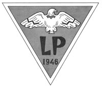
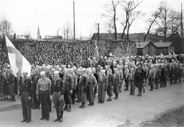
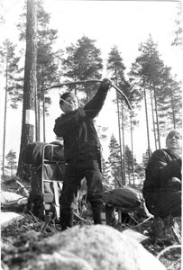
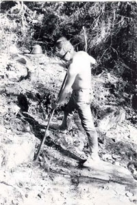

Yli kuusikymmentä vuotta lauttapartiomaista menoa
Lauttasaari ennen LP:tä
Partiotoiminnalla oli Lauttasaaressa vahva alku, sillä jo 1934 pidettiin nykyisen Pajalahden alueen pelloilla suuri pohjoismainen partiokokous, eli Drumsö-leiri. Saaren ensimmäiset suomenkieliset lippukunnat perustettiin myös noihin aikoihin seurakunnan alaisuuteen. Poikien, eli Lauttasaaren Partiosissien toiminta kuitenkin hiipui sotien myötä ja viimeinen tiedetty toimintavuosi on 1946. Tyttöjen Lauttasaaren Tiirat toimivat vielä sotienkin aikaan aktiivisesti, mutta toiminta tiettävästi loppui samoihin aikoihin, kuin pojilla.Vuosina 41-42 poikien nuorisotyötä saarella käynnisteli myös Nuorten Miesten Kristillinen Yhdistys, eli NMKY, jonka myötävaikutuksella 27. maaliskuuta 1946 Lauttapartio, eli silloin vielä Lauttasaaren Siniset, perustettiin.
Johtajia sillan toiselta puolelta
Tuore lippukunta, joka liitettiin välittömästi NMKY:n siniseen partiopoikaliittoon, sai vauhdikkaan alun ja jäsenmäärä ylitti jo toisena vuonna sadan. ”Ratkaisevaa oli johtajien saaminen ”sillan toiselta puolelta” muun muassa Helsingin Sinisistä”, alusta asti mukana ollut ja 50-luvulla lippukunnanjohtajana toiminut Pentti "Pihlis" Pihlajamäki muistelee. Alkuvuosina vartioita oli neljä kerrallaan ja kolkkaparvia kaksi. Lisäksi aivan ensimmäisestä vartiosta kasvoi vähitellen vaeltajavartio, joka keräsi piiriinsä koko silloisen johtajiston. Vuonna 1948 nopeasti kasvava lippukunta sai haaraosaston Westendiin ja myöhemmin myös Matinkylään. Muutaman johtajan siirryttyä vetämään haaraosastoa itsenäistyi tämä omaksi Westendin Korvenpojat lippukunnaksi. Tulevina vuosina lippukuntien yhteistyö oli kuitenkin tiivistä ja Siniset kohtasivat Korvenpoikia muun muassa säännöllisissä jää- ja käsipallo-otteluissa.
Aika vaihtaa nimeä
1950-luvun alkuun tultaessa Lauttasaaren Sinisten toiminta alkoi osoittaa lievästi laimenemisen merkkejä, vanhimman johtajapolven alkaessa kasvaa ulos toiminnasta. Uutta potkua löydettiin kuitenkin Lauttasaareen saapuneen nuoripastori Matti Hakkaraisen avulla, joka pyydettiin heti myös lippukunnanjohtajaksi. Hänen johdollaan aika NMKY:n holhouksessa päättyi ja uudeksi taustayhteisöksi tuli Keski-Helsingin seurakunta.
Lippukunnan järjestäytyessä uudelleen päätettiin myös nimeä vaihtaa, olivathan Lauttasaaren Luotsitytötkin juuri aloittaneet toimintansa. Joulukuussa 1952 johtajisto esittäytyikin tytöille yhteisessä kokouksessa, uudella Lauttapartio –nimellä. Nimen vaihdosta oli kyllä harkittu jo aiemminkin, sillä Johtajaneuvosto ehdotti yksimielisesti talvella 1949 Vanhempainneuvostolle nimeä Lauttasaaren Sini-Kotkat. Ilmeisesti tästä ehdotuksesta kuitenkin luovuttiin.
Vuoden 1953 keväällä vihittiin juhlallisesti käyttöön myös Lauttapartion oma lippu. Arkkitehti Erkki Koiso-Kanttilan suunnittelemassa lipussa oli lopulta suuri merikotka siivet levällään, vaikka mukaan ehdotettiin aluksi ponnekkaasti silta-aihetta. Lippukunnan tunnuksena aiemminkin olleeseen kotkaan päädyttiin lopulta Lauttasaaren korkeimman kohdan Kotkakallion mukaan. Silta hylättiin, koska sitä ei pidetty vain Lauttasaarelle kuuluvana.
Vanhemmat taustalla alusta asti
Lauttasaaren Siniset saivat heti alusta lähtien toimintaansa tukemaan Vanhempainneuvoston, joka uutterasti keräsi lippukunnalle varoja erilaisilla tempauksilla. Vanhempainneuvoston alla toimivat aktiivisesti myös eri vaiheissa Lauttapartion Naistoimikunta, eli Partioäidit, jotka järjestivät tehokkaasti myyjäisiä. Vanhempainneuvosto oli vahva taustatekijä lippukunnassa aina 70-luvulle asti. Jopa niin vahva, että ainakin 50-luvulla Johtajaneuvoston kokouksissa kyseltiin välillä, että kuka niitä päätöksiä Lauttapartiossa oikein tekee Vanhempainneuvosto vai JN? Vanhempien ansioihin kuuluivat erityisesti lippukunnan suurista hankinnoista, kuten vaikkapa lipusta ja kämpästä huolehtiminen.
Pönttölästä Ankan kautta kirkolle
Lauttasaaren Siniset sai perustamisvaiheessa NMKY:n avulla omat tilat Lauttasaarentie 55:stä, nykyisestä 47:stä. Kokoontumistilan nimeksi vakiintui nopeasti Pönttölä, joka juontanee juurensa johtajiston toimittamaan lehteen - Pönttöturinoihin. Pöntöstä tulikin alkuaikojen eräänlainen symboli, jota toteutettiin hankkimalla istuimiksi vanhoja tynnyreitä ja jopa rintamerkeiksi pienet hopeatynnyrit. Pönttölässä toimintaa valvoi usein Pönttölän isäntä, mutta silti meno äityi joskus villimmäksi. Niinpä vuonna 1950 Johtajaneuvosto päättikin, että jokaisesta Pönttölässä lausutusta kirosanasta tulee suorittaa lippukunnalle viisikymmentä markkaa.
Lippukunnan taustayhteisön vaihtuessa seurakunnaksi, päättyi myös Pönttölän aika. Seurakunnan avulla hankittiin uudet tilat, tai tuttavallisemmin uusi ”kämppä” Isokaari kolmentoista kellarista. Uudelle kämpälle pohdittiin heti talvella 1953 nimeä. Vahvana ehdotuksena oli etenkin ”Putkilo”, mutta ilmeisesti nimi jäi kuitenkin vahvistamatta ja yleisesti puhuttiin vain kämpästä. Tammikuussa 1957 voimakkaassa kasvussa ollut lippukunta sai jälleen uudet tilat, tällä kertaa Otavantie 3 A:sta. Tämän kämpän JN päätti välittömästi nimetä tuntemattomasta syystä ”Ankaksi”. Näihin aikoihin koloja oli ilmeisesti myös useampia käytössä, koska yksi tila ei millään riittänyt noin kahdelle sadalle lauttapartiolaiselle. Tiettävästi ainakin yksi lisäkämppä sijaitsi silloisella vanhalla kansakoululla, eli nykyisellä Pajalahden koululla.
Lauttapartion Ankka-aika jäi kuitenkin varsin lyhyeksi, sillä jo vuoden sisään tuli tieto, että pojat ja tytöt saavat omat tilat valmistumassa olevalta Lauttasaaren kirkolta. Toukokuussa 1958 Johtajaneuvosto pääsikin tutustumaan kirkon yhteyteen valmistuvaan työkeskukseen ja pöytäkirjaan kirjattiin ylpeänä: ”Partiokämpät ovat luovutetut käyttöömme.” Syksyllä kaikki lauttapartiolaiset pääsivät ihmettelemään, miten uudessa paikassa oli tilaa peräti neljä huonetta ja kellarissa erikseen vielä iso varasto kaikelle leirikalustolle. Kirkon tiloja ryhdyttiin nopeasti nimittämään yleisen partiokäytännön mukaisesti koloksi.
Komean kasvun aikaa
Viisikymmentäluvulla lauttapartiolaisten määrän kasvaessa kahteensataan ja 60-luvulla reilusti ylikin, paisui erilaisten ryhmien määrä lippukunnassa huomattavaksi. Esimerkiksi vuonna 1959 lippukunnassa toimi kolkkaosastossa neljä laumaa, Partiopoikaosastossa 15 vartiota kolmessa eri joukkueessa, sekä vaeltajaosasto, jonka alaisuudessa erillinen Ilves-kilta. Lisäksi olivat toki vartionjohtajaneuvosto, kolkkajohtajaneuvosto, Jälkiä-lehden toimituskunta, Vanhempainneuvosto, sekä Johtajaneuvosto jonka kokouksissa saattoi normaalisti olla paikalla jopa kaksikymmentä henkeä.
50-luvulla alkoi myös vireä yhteistoiminta Luotsityttöjen kanssa. Erityisesti lippukuntien johtajistot kokoontuivat yhteisiin ”Kuutamoiltoihin” kololle ja säännöllisille johtajaretkille Kiljavalle. Usein paraatien jälkeen vietettiin myös ”Rääppiäisiä” kololla ja järjestettiinpä välillä myös johtajistojen yhteisiä tanssiaisia.
Kisoja joka lähtöön
Erilainen kisatoiminta oli tärkeä osa jo Lauttasaaren Sinisten alkuaikojen menoa. Kolmen ensimmäisen vuosikymmenen aikana lippukunnan toimintaan kuuluivatkin oleellisesti muun muassa hiihto-, suunnistus-, yleisurheilu ja Tunne Lauttasaari –kisat. Alkuvuosikymmeninä osallistuttiin ahkerasti myös piirin järjestämiin partiotaitokilpailuihin. Omia pt-kisoja lippukunta on järjestänyt ainakin 70-luvulta lähtien ja vuonna 1977 mukaan kutsuttiin myös Luotsitytöt, joiden kanssa yhteiset kevätkisat ovat nykyään jo vankka perinne.
Säännöt hukassa
Viisikymmentäluvun lopulla Helsingin Partiopoikapiirin suurimpiin lippukuntiin kuuluvasta Lauttapartiosta haluttiin tehdä virallinen yhdistys. Rekisteröintiasiaa hidasti kuitenkin pahasti lippukunnan vanhojen sääntöjen häviäminen. Johtajaneuvoston kokouksissa asiasta käytiin väliin tiukempaakin sananvaihtoa, sillä muun muassa Ilves-killan edustajat ilmoittivat, että jos lippukuntaa ei saada rekisteröityä, kilta rekisteröityy yksinään. Uudet säännöt saatiin kuitenkin laadittua ja vuonna 1960 Lauttapartio r.y. merkittiin yhdistysrekisteriin.
”Ylisuuri” lippukunta
Nimen rekisteröimiseen liittyivät myös suunnitelmat, joissa pohdittiin vakavasti lippukunnan jakamista kahtia. Tällöin ”ylisuureksi” mainitusta Lauttapartiosta olisi tehty erilliset maa- ja vesi-partiolippukunnat. Meritoimintahan oli saanut vahvaa kannatusta 50-luvun lopulla lippukunnan Merivoimilta ostaman moottorivene m/s Emman myötä. Samoihin aikoihin lippukunnalla oli myös tiettävästi useampia purjehdusjollia.
Näinpä uusia sääntöjä laativalle toimikunnalle annettiinkin tehtäväksi miettiä myös jakamisasiaa. Myöhemmin asiasta kyseltiin lippukuntalaistenkin mielipiteitä Jälkiä-lehden välissä jaetulla lomakkeella. Lippukunnan jakamisesta kuitenkin luovuttiin ja kalliiksi käynyt moottorivene Emmakin myytiin jo muutaman vuoden käytön jälkeen. Emman myötä Lauttapartio sai kuitenkin erillisen meripartio-osaston, joka toimi useita vuosia
Erätaidot kunniassa
Lauttapartiolaisten erätaitoja on lippukunnassa pidetty aina kovassa kurssissa. Tärkein erä- ja partiotaitojen mittaaja on kautta vuosien ollut luokkamerkkisuoritukset, jotka aiemmin tunnettiin myös loppututkintona tai merkki ja maastosuorituksina. Suoritusten hyväksymislinja ei kuudessakymmenessä vuodessa ole pahemmin repsahdellut. Kun vuonna 1958 I-luokan läpäisi yksi ja II-luokan suorittajista hylättiin kaikki, hyväksyttiin vuonna 2005 II-luokan suorituksista kaksi ja I-luokasta ei yhtään. Suoritusten arvostuksesta kertoo myös vaikkapa se, että –50 ja 60-luvuilla saatettiin suorituksia seuraamaan kutsua koko Vanhempainneuvosto.
Kesäleirit ovat myös olleet aina arvostettu tapahtuma lippukunnassa. 40-luvulla ei omiin leireihin vielä ollut varaa ja tällöin osallistuttiinkin ahkerasti muun muassa Vierumäen suurleireille. Lauttapartion ensimmäinen oma leiri järjestettiin tiettävästi kesällä 1952 Pirttisaaressa Porvoon edustalla. Viisikymmentäluvun Pirttisaaren ja Viipurinsaaren leireistä lähtien kesäleirejä onkin pidetty lähinnä omin voimin.
Oma retkipaikka - pitkän haaveilun tulos
Lauttapartion oman retkipaikan hankkiminen oli lähes kymmenen vuoden suunnittelun tulos, jossa merkittävää roolia näytteli Vanhempainneuvosto. Keväällä 1959 perinteistä kesäleiripaikkaa Viipurinsaarta yritettiin vaihtaa uuteen, huonolla menestyksellä. Jo tällöin Johtajaneuvoston kokouksessa esitettiin mielipiteitä oman leiri- ja retkeilyalueen hankkimiseksi. Kämppähanke käynnistyi virallisesti 1961, jolloin Vanhempainneuvosto päätti ryhtyä aktiivisesti etsimään sopivaa maapalstaa lippukunnan retkitoiminnan tukikohdaksi. Samalla käynnistettiin myös aktiivinen varainkeruu, jota toteutettiin seuraavien vuosien aikana tehokkaasti muun muassa jätepaperikeräyksellä, lehtitilauksilla, mainosjakelulla, partioäitien myyjäisillä ja näyteleireillä.
Seuraavina vuosina lippukunta ilmoittelikin useaan otteeseen Uudessa Suomessa ja Helsingin Sanomissa otsikolla ”Ostetaan 1:n hehtaarin maa-alue”. Tuloksena oli runsaasti vastauksia eri puolilta Etelä-Suomea.
Lopulta 1967 alkuvuodesta päädyttiin metsätonttiin silloisen Pyhäjärven kunnassa (nykyisen Karkkilan alueella), jossa oli jo ehditty pitää talvileiriä ja jonka lähelle olivat useat vartiot jo tehneet retkiä. Vanhempaineuvoston suunnitelmissa oli rakentaa tontille aluksi hirsinen saunatupa, joka soveltuu yhden vartion viikonloppuretkiin. Myöhemmin viereen aiottiin saada myös hieman suurempi hirsimaja. 5. huhtikuuta 1967 lippukunta ostikin Puumalan pariskunnalta hehtaarin verran maata. Tontin nimeksi tuli Kotkanpesä. Toukokuussa tontille haettiin rakennuslupaa ja kesäkuussa valmistui talkootyöllä tehtyjen perustusten päälle hirsinen saunamökki. Kämpän hirret tuotiin ilmeisesti varsin pitkältä, sillä kauppakirjojen mukaan ne ovat Kuusamon punahonkaa. Seuraavana syksynä valmistuivat myös vaja ja vessa.
Heti alusta lähtien kämppä oli lähes viikoittaisessa käytössä ja niinpä keväällä 1968 vanhempainneuvosto laati Kotkanpesälle säännöt, jotta: ”Kuri ja järjestys säilyisi.” Kiivaan retkitoiminnan helpottamiseksi Vanhempainneuvosto suhtautui myös jo kahden vuoden kuluttua myönteisesti Johtajaneuvoston ehdotukseen hankkia Lauttapartiolle käytetty VW-Kleinbuss. Ilmeisesti oma auto jäi kuitenkin hankkimatta. Samana vuonna Vanhempainneuvosto suunnitteli kämpälle myös turvekodan ja laiturin rakentamista. Lisäksi vuoden 1969 alussa keskusteltiin Kotkanpesän varaamisesta myös ilman omaa kämppää olevien Luotsityttöjen käyttöön. Seuraavana syksynä pohdittiin vakavasti jopa mahdollisuutta rakentaa tytöille oma kämppä poikien tontille. Nämä suunnitelmat jäivät kuitenkin toteutumatta Vanhempainneuvoston ja lippukunnan toiminnan alkaessa hiipua.
Jäsenmäärä heittelee
70-luvun alussa Lauttapartion jäsenmäärä notkahti rajusti. Kun vuonna 1970 lauttapartiolaisia oli vielä 110, kirjattiin vuoden 1971 jäsenmääräksi enää alle neljäkymmentä. Tällöin Lauttasaaressakin näkyi vahvasti nuorison kiinnostus politiikkaan ja poliittisiin nuorisojärjestöihin. Tätä pientä partiotoiminnan hiljaiseloa kesti Lauttapartiossa kuitenkin vain vuoteen -74, jolloin jäseniä oli alkuvuodesta viitisenkymmentä, mutta vuoden lopussa jo yli tuplasti. Kahden vuoden kuluttua rikottiinkin jälleen 150 jäsenen raja.
70-luvun lopulla otettiin myös merkittäviä askeleita yhteistyössä Luotsityttöjen kanssa, sillä yhteisten pt-kisojen lisäksi lähdettiin vuonna 1979 myös ensimmäiselle Suomen Partiolaisten suurleirille Karelialle – ensimmäistä kertaa samaan savuun asumaan.
LP-muotia
1980-luvulla lippukunnat alkoivat hankkia erilaisia omia vaatteita ja niinpä lauttapartiolaisetkin kulkivat pian erilaisissa kotkankuvilla varustetuissa paidoissa.
1990-luvun alussa Lauttapartio-vaatteet saivat jatkoa, kun lippukunnan viininpunaiset anorakit hankittiin ja samalla t-paitamalli uudistettiin. Molempien vaatteiden komistukseksi suunniteltiin myös uudenlainen kotkanpää-logo. Partiovaatetusta kohennettiin 80-luvulla myös vartiolaisten ja johtajien vihreällä baretilla ja kotkanpää-barettimerkillä. 2000-luvulla vaatetusta ehostettiin jälleen johtajiston päättäessa herättää henkiin unohtuneen barettiperinteen. Väri kuitenkin haluttiin tällä kertaa vaihtaa viininpunaiseksi.
Vapaamuotoisen vaatetuksen lisäksi 80-luvun taitteessa Lauttapartio sai kohennusta myös viralliseen asustukseen, kun vanhoista huivimerkeistä luovuttiin. Tilalle astui nykymuotoinen painetulla kotkankuvalla varustettu huivi. 80-luvun puolivälissä myös partiopaitaan saatiin kotkatunnus omien ansiomerkkien myötä. Kotkanpäisiä merkkejä jaetaankin nykyään aina pronssisesta jäsenmerkistä kultaiseen kunniajäsenen merkkiin asti.
Vaelluskulttuuri uuteen nousuun
Lauttapartion viimeisen reilun kymmenen vuoden toimintaa ovat vahvasti leimanneet erilaiset vaellukset. Vaelluskulttuurin uutta tulemista ovat edustaneet Eräpoikaosaston metsäsuksilla suoritettu pääsiäisvaellus, sekä kesäinen melontavaellus kajakeilla. Näistä pääsiäisvaellus järjestettiin huhtikuussa Sallassa yhdeksättä kertaa peräkkäin ja melontavaellus viime kesäkuussa jo kahdettatoista kertaa peräkkäin.
EPO:n vuotuisten vaellusten lisäksi vartiolaiset käyvät nykyään säännöllisesti Partiopoikaosaston yhteisillä Savotta-kevätvaelluksilla Nuuksiossa, joissa oleellista on erätaitojen harjoittelu esimerkiksi tilapäismajoitteessa yöpymisen muodossa. Innostuttiinpa toissa talvena järjestämään vartiolaisten talvivaelluskin. Osastojen vaellusten lisäksi suurta suosiota ovat keränneet lippukunnan pitkät kesävaellukset Lapissa ja ulkomailla. Saariselän, Haltin ja Norjan valloitusten jälkeen siirryttiin kesällä 2003 vielä pidemmälle, johtajiston lähtiessä vaeltamaan Alpeille sveitsiläiseen kansallispuistoon. Lauttapartiolaisessa hengessä on Alppi-reissun jälkeen puhuttukin seuraavan etapin olevan sitten Uralilla tai Himalajalla.
-
Teksti:
Matti Tanner -
Kuvat:
LP-arkisto